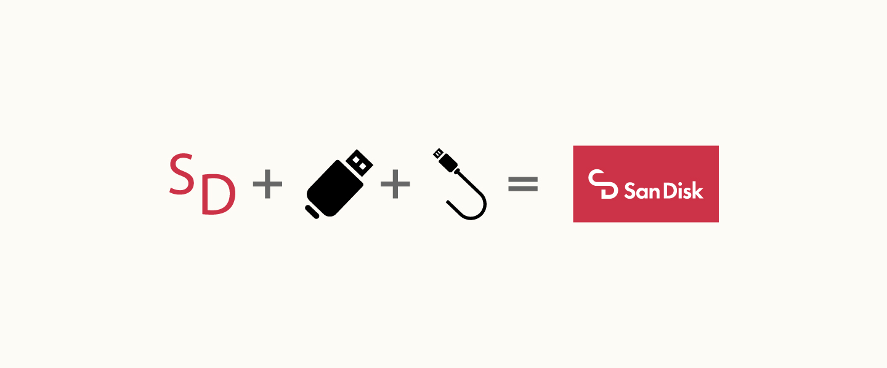
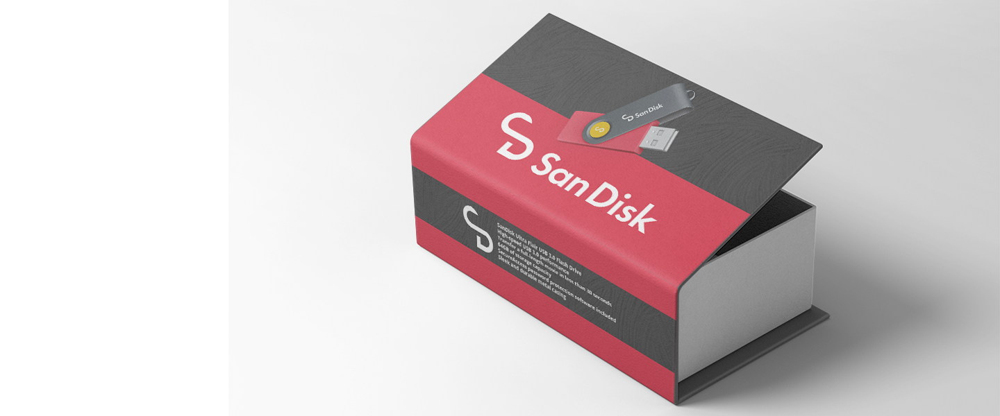
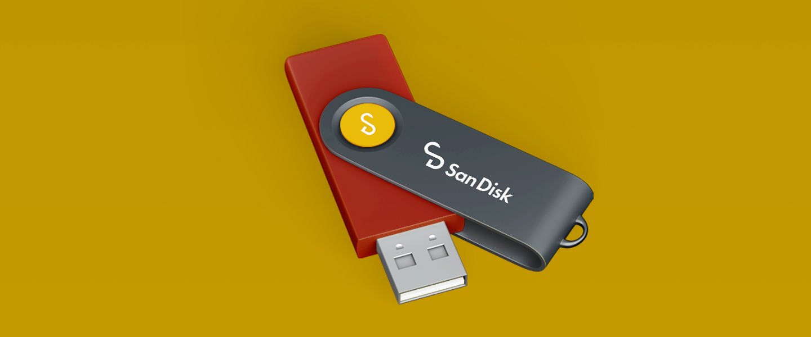
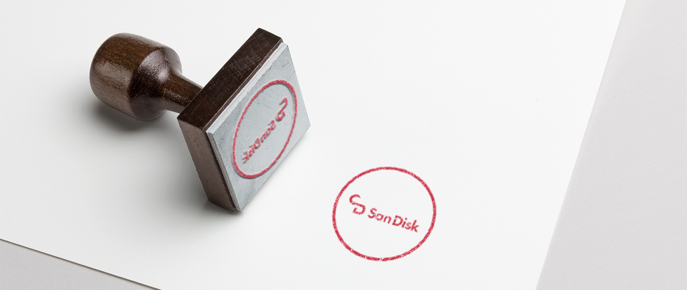
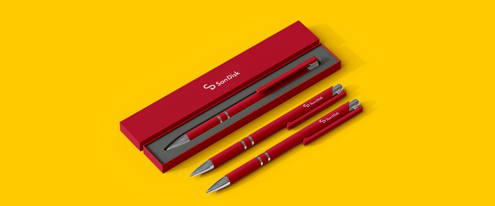
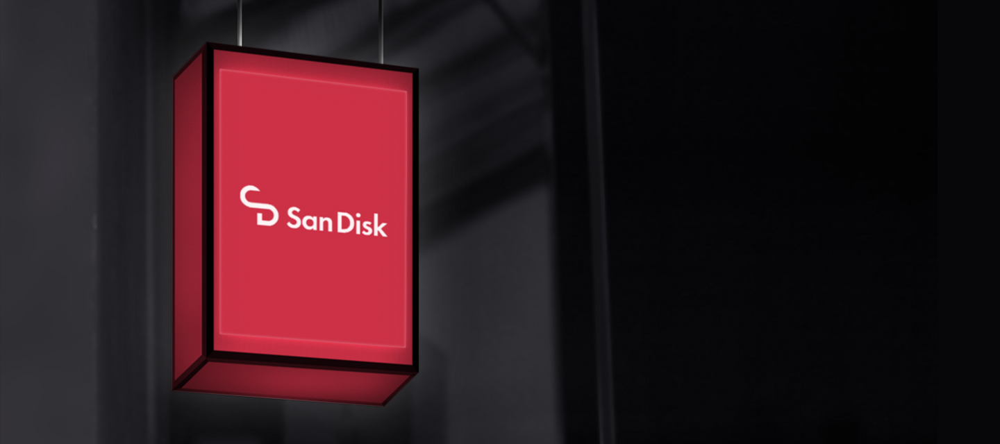
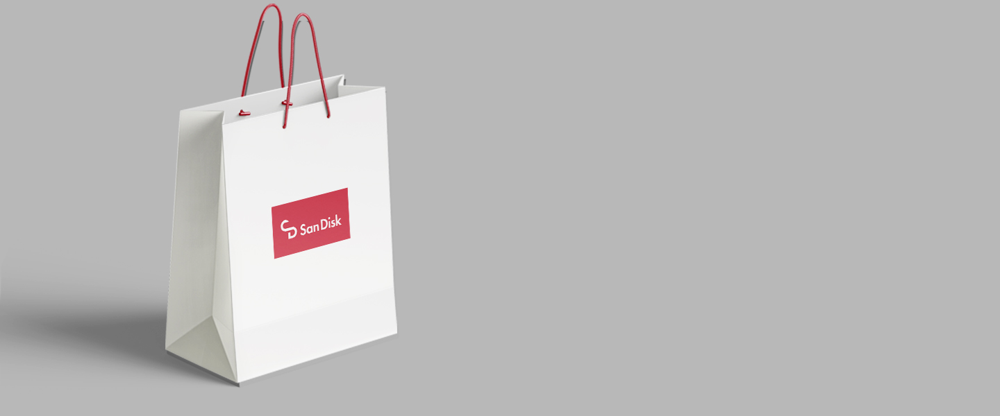
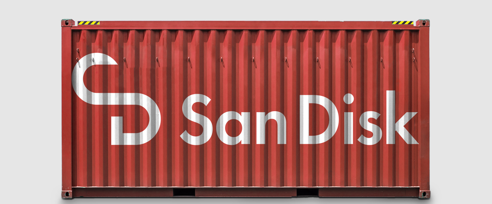
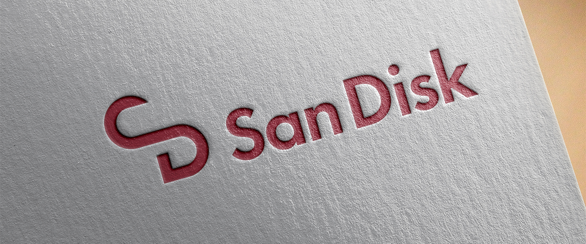
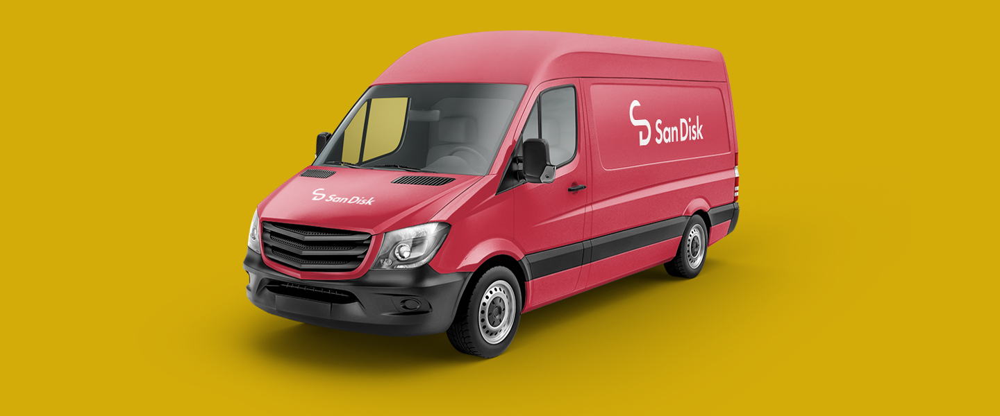

SanDisk
Rebranding
Description:
A Contemporary Evolution. In this rebranding venture, I embarked on a mission to reshape SanDisk’s visual identity while maintaining its familiar essence. The new logo captures the iconic shape of a USB key’s top part, ingeniously fashioned to form the letters ‘S’ and ‘D’ for SanDisk. Infused with innovation, a subtle cord emerges from the top, alluding to connectivity (s). A vibrant palette of red and white retains the brand’s distinctive colors, encapsulating its legacy while welcoming a fresh era of technology.










